高级全局API钩取：IE连接控制
钩取IE进程的API 在他链接特定网站的时候 将其链接到其他网站
调试IE进程
常见网络连接库：ws2_32.dll（套接字），wininet.dll，winhttp.dll
使用Process Explorer查看IE加载的DLL
IE不仅加载了ws2_32.dll还加载了wininet.dll，wininet.dll中提供的API中有个名为InternetConnect()的API，这个API用来连接网站
1 | HINTERNET InternetConnect( |
首先先打开IE浏览器 等待浏览器加载完：
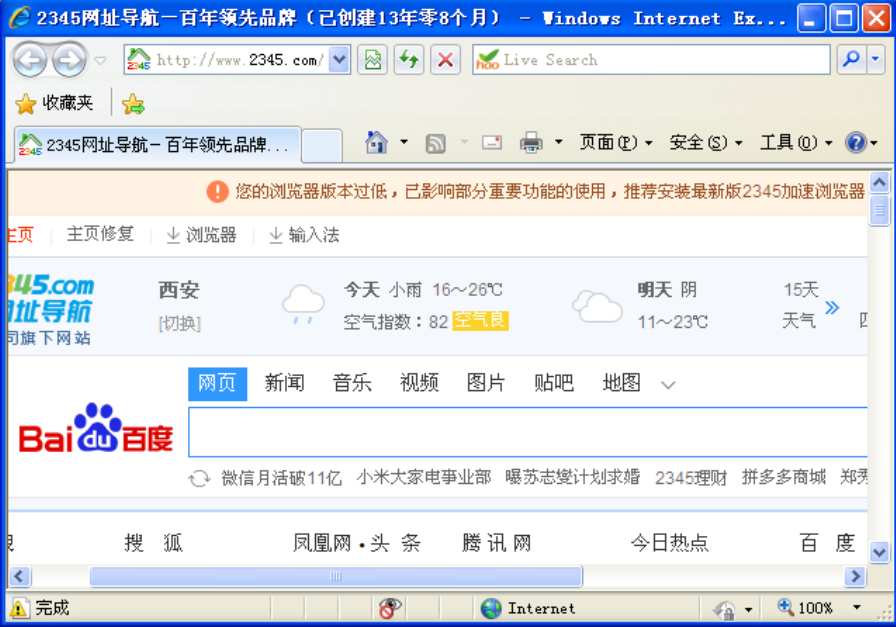
然后打开OD附加进程 这里发现有两个IE的进程 随便加载一个都行
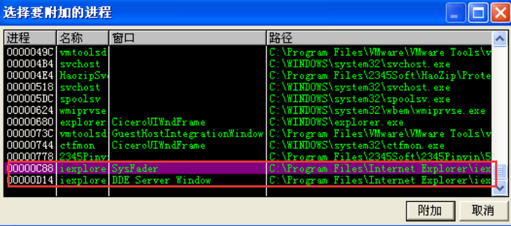
加载之后在反汇编窗口右击选择
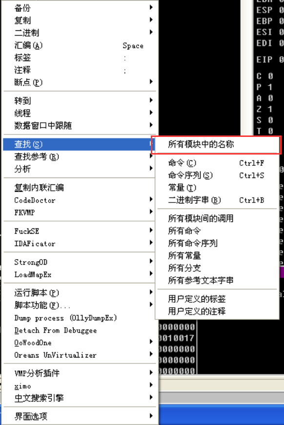
接下来找到InternetConnectW()API函数
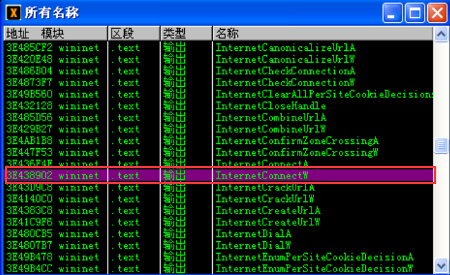
双击来到这里 设置断点
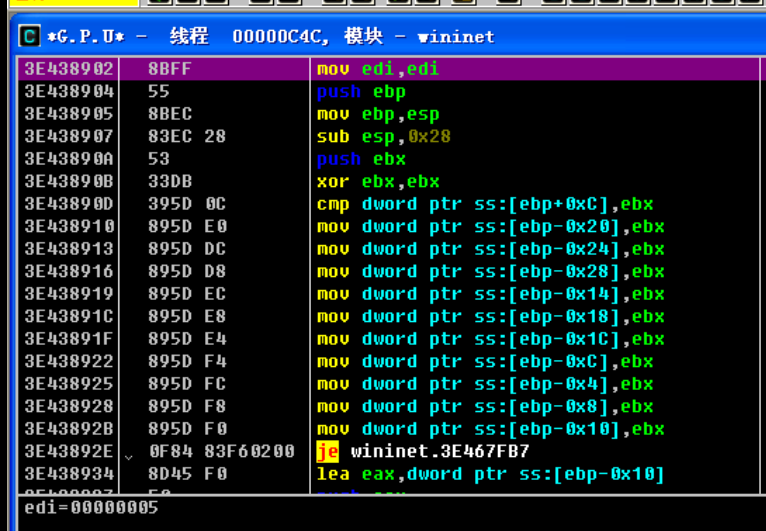
点击F9运行一次 然后在浏览器中输入网址
回车发现浏览器并没有跳转 OD处于暂停状态 右下角数据窗口是刚才输入的网址
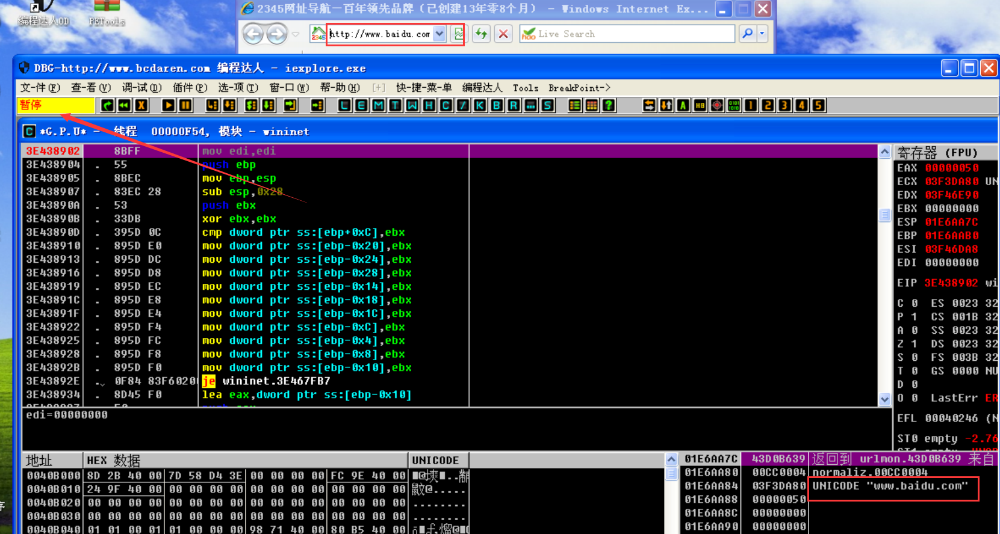
下来在数据窗口跟随 发现网址后更改为另外一个网址
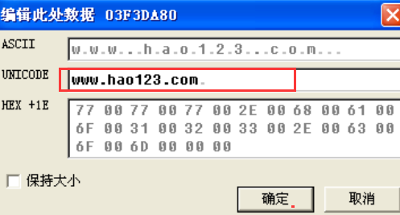
取消断点后F9运行程序
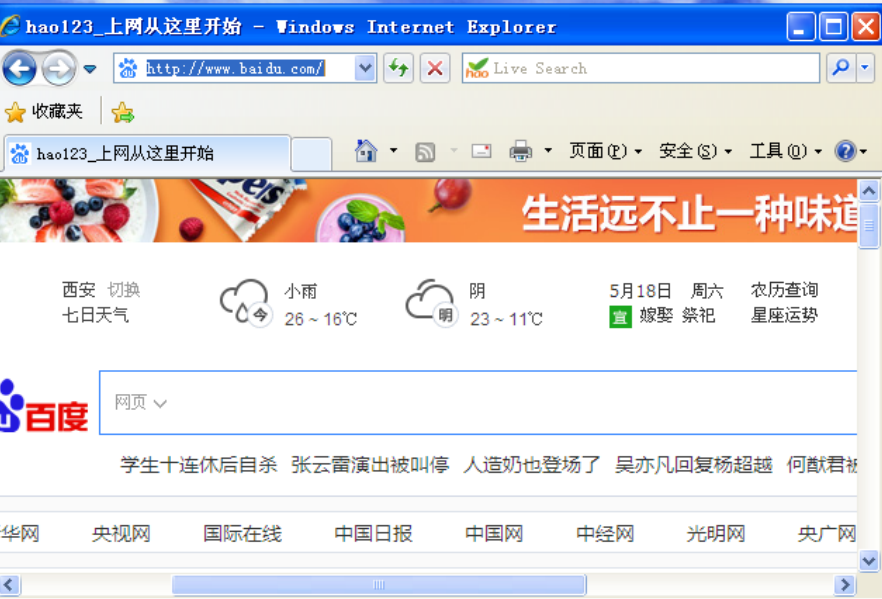
发现已经跳转到更改后的网址了
IE的进程结构
IE的每个选项卡对应一个进程，统一由一个父进程管理。所以钩取API时需要使用全局钩取。
这里通过钩取ntdll!ZwResumeThread钩取子进程
全局钩取ntdll!ResumeThread API
因为最终目的是控制IE的网络连接，所以dll注入时仅需向所有的iexplore.exe进程中注入即可，无需对其他无关进程注入dll
我们首先想想创建子进程的API有哪些 创建进程API中最具代表性的绝对是kernel32！CreateProcess{}API 下面调试一个简单的程序来测试CreateProcess（）API ：
cptest.exe
用OD载入cptest程序 发现这个程序和载入ie程序的一样 反汇编窗口右击查找所有模块名称 然后进入kernel32！CreateProcessW() 发现在内部又调用了kernel32！CreateProcessInternelW()：
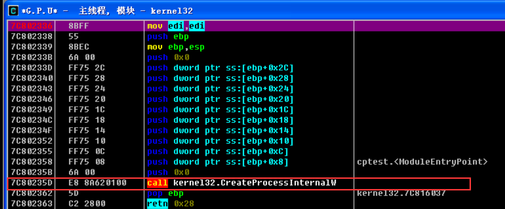
给kernel32！CreateProcessW()设置断点F9运行 接下来单步跟踪进入kernel32！CreateProcessInternelW()：
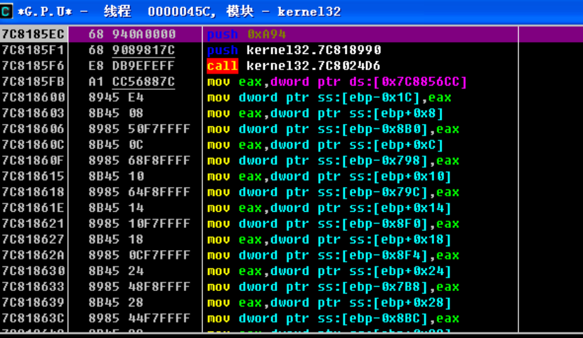
kernel32！CreateProcessInternelW()是一个相当大的函数 滚动条往下翻就会找到ntdll!ZwCreateUserProcess（） API：
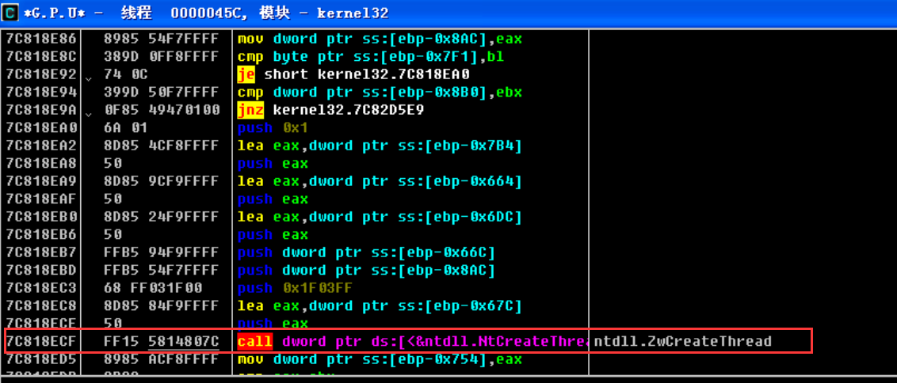
查看图中栈中出现了字符串notepad.exe同时在数据窗口也可以看到
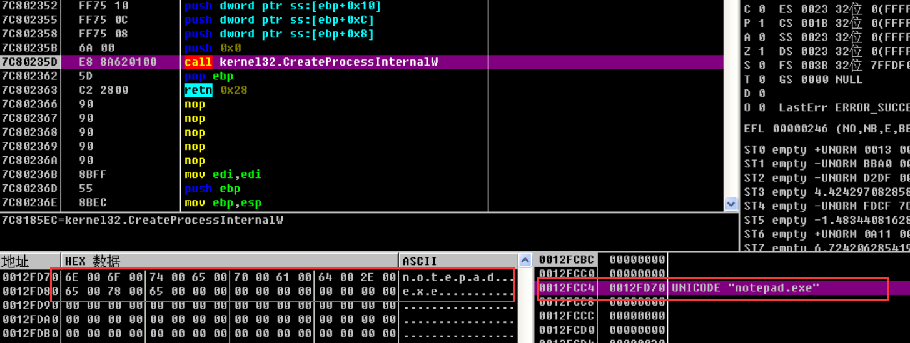
在process Explorer中可以看到notepad被暂时挂起 分配了PID却没有运行程序
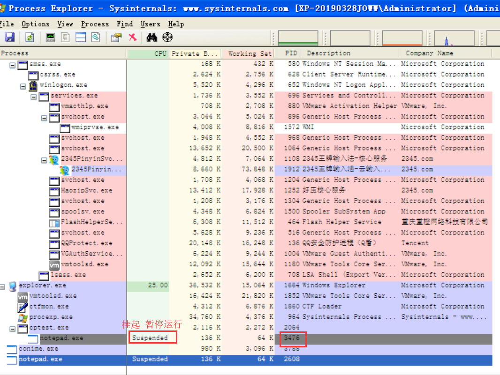
在OD中继续单步运行程序 可以看到调用ntdll.ZwResumeThread（）API的代码
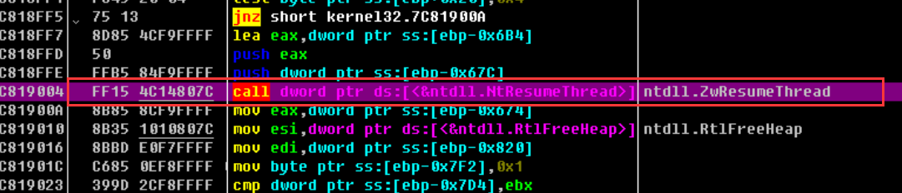
而ntdll.ZwResumeThread（）API函数就是用来恢复运行线程的 该线程是子进程（notepad.exe）的主进程 所以运行此代码时 子进程的EP代码才会执行 我们可以看见进程中的Suspended（挂起）已经不见了
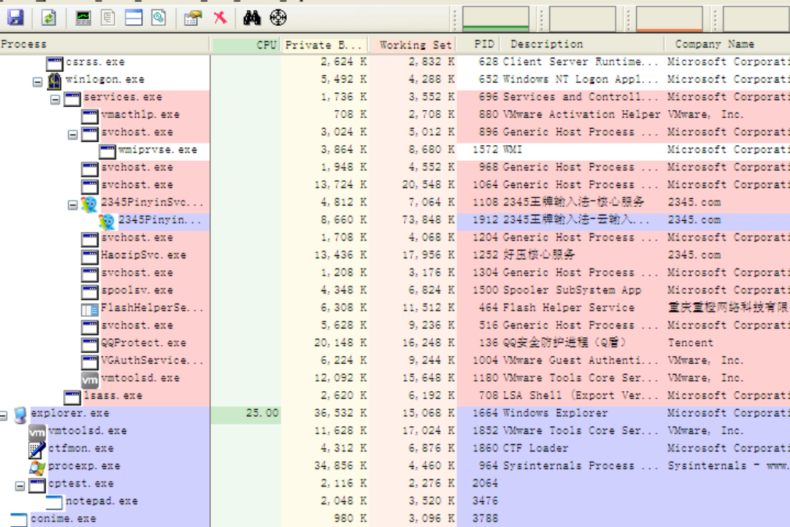
综上所述 CreateProcessW（）API的调用流程如下：1
2
3
4kernel32！CreateProcessW()
kernel32！CreateProcessInternelW()
ntdll!ZwCreateUserProcess（） //创建进程（主线程处于挂起状态）
ntdll.ZwResumeThread（） //主线程被恢复运行（运行进程）
创建子进程最后调用的是ntdll.ZwResumeThread（）API 所以钩取该API 在子进程的EP代码运行之前 拦截获取控制权 然后钩取指定API
前面的4个API都能实现实现我们的目标—全局API钩取
控制IE浏览器
运行IE
首先运行IE浏览器 然后使用process Explorer查看运行中的IE进程的结构
我们可以看到 IE进程以父子进程的形式进行 只要钩取夫进程的ntdll.ZwResumeThread（）API 那么后面的所有子进程都会被钩取
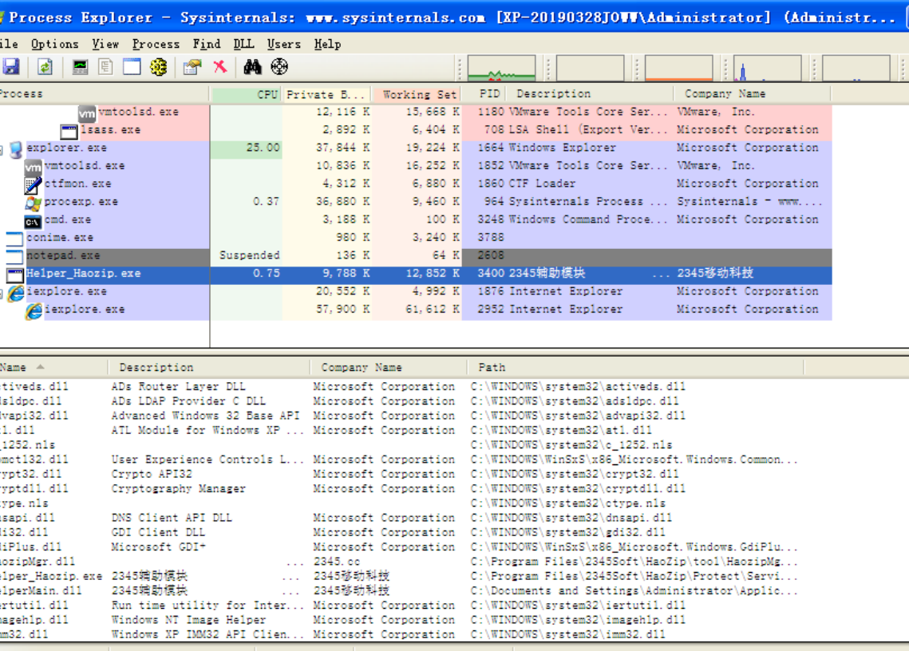
注入DLL
使用如图InjDll.exe命令 将redirect.dll文件注入IE进程
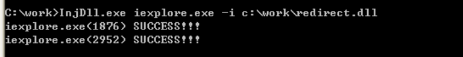
查看DLL注入成功
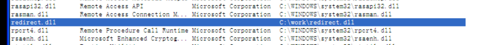
卸载DLL
我们可以看到DLL已经卸载成功
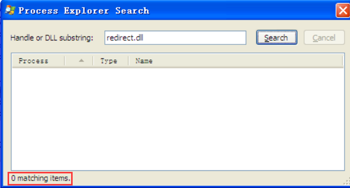
源代码分析
DllMain
1 | BOOL WINAPI DllMain(HINSTANCE hinstDLL, DWORD fdwReason, LPVOID lpvReserved) |
该函数的核心功能是ZwResumeThread()和InternetConnectW()API的“挂钩/脱钩”功能 其中有条语句特别明显 若加载进程名为IE.exe时 则加载wininet.dll文件 这和全局API钩取的特性有关 钩取ZwResumeThread（）API时 需要在相关进程开始之前就获得拦截权 此时我们钩取的wininet.dll可能还未加载
NewInternetConnectW
1 | HINTERNET WINAPI NewInternetConnectW |
InternetConnectW()的钩取函数为NewInternetConnectW()函数 他负责监视IE的连接地址 IE连接到特定网站时 将其转到我们的指定网站
NewZwResumeThread
1 | //ThreadHandle是要恢复运行的线程的句柄(即子进程的主线程) |
这个函数负责对ntdll.ZwResumeThread（）API进行全局钩取